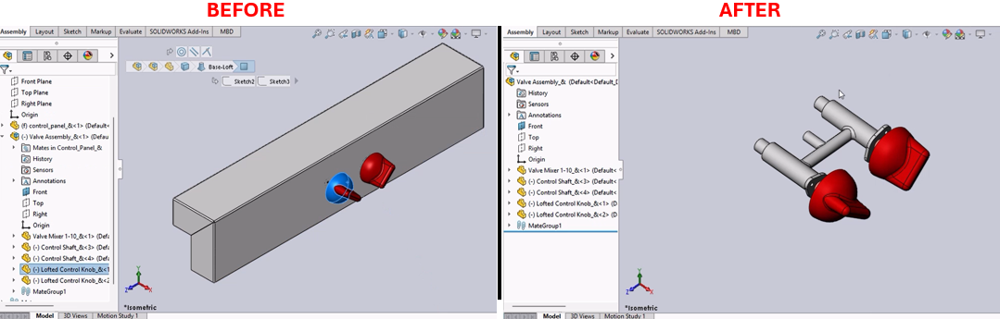

Open and Activate Assembly Macro for SolidWorks
Description
This macro is designed to navigate through the assembly structure in SolidWorks to find the top-level assembly for a selected component and open it if it's not already active. If the selected component is a part, the macro will open its file directly.
System Requirements
- SolidWorks Version: SolidWorks 2014 or newer
- Operating System: Windows 7 or later
Pre-Conditions
Note
The macro should be run within an open document in SolidWorks. A component must be selected within an assembly or part document before running the macro.
Results
- The macro opens and activates the top-level assembly of the selected component.
- If the selected component is a part, that part document is opened directly.
Steps to Setup the Macro
Create the Module:
- Open the VBA editor in SolidWorks by pressing (
Alt + F11). - Navigate to the VBA project where you want to include the macro.
- Right-click on
Modulesand select Insert > Module. - Paste the provided VBA code into the module.
- Open the VBA editor in SolidWorks by pressing (
Run the Macro:
- Ensure a component within a sub-assembly is selected in the open document.
- Save the macro file (e.g.,
OpenSubAssembly.swp). - Run the macro by navigating to Tools > Macro > Run in SolidWorks, then select your saved macro file.
Using the Macro:
- The macro will automatically determine the sub-assembly that directly contains the selected component and open it.
- If the selected component is nested within multiple sub-assemblies, the macro opens the immediate parent assembly.
VBA Macro Code
' Disclaimer:
' The code provided should be used at your own risk.
' Blue Byte Systems Inc. assumes no responsibility for any issues or damages that may arise from using or modifying this code.
' For more information, visit [Blue Byte Systems Inc.](https://bluebyte.biz).
Option Explicit
' SolidWorks application and document objects
Dim swApp As SldWorks.SldWorks ' SolidWorks application object
Dim swmodel As SldWorks.ModelDoc2 ' Active document object
Dim assemdoc As SldWorks.ModelDoc2 ' Assembly document object
Dim swselmgr As SldWorks.SelectionMgr ' Selection manager object
Dim selcomp As SldWorks.Component2 ' Selected component object
Dim swent As SldWorks.Entity ' Entity object representing selected geometry
Dim parcomp As SldWorks.Component2 ' Parent component in the hierarchy
Dim tempcomp As SldWorks.Component2 ' Temporary component for parent traversal
Sub main()
' Initialize SolidWorks application
Set swApp = Application.SldWorks
' Get the active document
Set swmodel = swApp.ActiveDoc
' Get the selection manager for the active document
Set swselmgr = swmodel.SelectionManager
' Get the first selected object as an entity
Set swent = swselmgr.GetSelectedObject(1)
' Retrieve the component associated with the selected entity
Set selcomp = swent.GetComponent
' Get the parent component of the selected component
Set tempcomp = selcomp.GetParent
' Check if the selected component has no parent (it is a standalone part)
If tempcomp Is Nothing Then
' Open the document associated with the selected component
Set swmodel = swApp.OpenDoc(selcomp.GetPathName, 2) ' Open as a part document
' Activate the document to display it in the SolidWorks interface
Set swmodel = swApp.ActivateDoc(selcomp.Name)
Exit Sub
End If
' Initialize parent component as the immediate parent
Set parcomp = tempcomp
' Traverse the hierarchy to find the topmost parent component
Do While Not tempcomp Is Nothing
' Get the parent of the current component
Set tempcomp = tempcomp.GetParent
' Update the parent component to the current one if valid
If Not tempcomp Is Nothing Then
Set parcomp = tempcomp
End If
Loop
' Get the assembly document associated with the topmost parent component
Set assemdoc = parcomp.GetModelDoc2
' Open the assembly document
Set swmodel = swApp.OpenDoc(assemdoc.GetPathName, 2) ' Open as an assembly document
' Activate the assembly document to display it
Set swmodel = swApp.ActivateDoc(assemdoc.GetTitle)
End Sub
Macro
You can download the macro from here
Customization
Need to modify the macro to meet specific requirements or integrate it with other processes? We provide custom macro development tailored to your needs. Contact us.